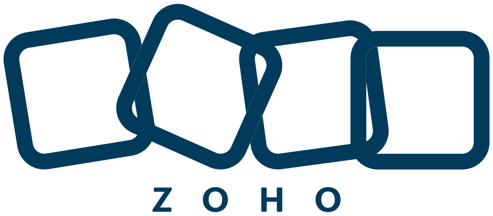

OpenCV based visual logger for debugging, logging and testing image processing code.

Born and brought up in both technology and business, I have played versatile roles in this industry, as a Product Designer and Developer, Business Analyst and Project Manager, Pre and Post Sales, QA and Test Automation, DevOps and Data Architect.
Started with 99's FoxPro & Visual Basic to today's Rust & Julia, I have been exploring the highest possibility of technology for solving industrial problems. I also have expertise in Health Care, Finance, Intellectual Property, and e-commerce domains.




OpenCV based visual logger for debugging, logging and testing image processing code.

A Serverless Plugin to deploy gems from Gemfile to AWS Layer.

A Neovim theme inspired by Atom's One Dark theme, written in Lua.
 Javascript
JavascriptDiscover when it's appropriate to use Typescript's `any` type...
 computer-vision
computer-visionRequirements and Python package implementation for Visually debugging, logging and testing using opencv and python. Logging and testing using opencv-log package
 elasticsearch
elasticsearchConfiguration Multiple elasticsearch in rails by assigning model specific client.
 ml-tools
ml-toolsGet started with Machine Learning using Jupyter notebook in Visual Studio Code. Also Execute python file like notebook file using VS Code.
 ml-tools
ml-toolsSetting up tools like Anaconda, Python, Conda, Jupyter Notebook to get started with Machine Learning in Python. Intro on basic python libraries for analysing, visualizing, training and predicting data
 machine-learning
machine-learningColor calibration with color checker using machine learning techniques. Implementing using Partial Least Squares, Root Polynomial Regression and 3D Thin plate spline technique in python.
nova@navarasu.com